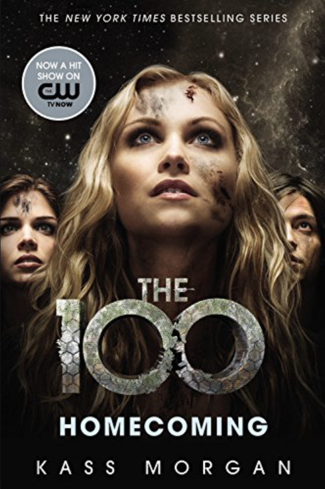
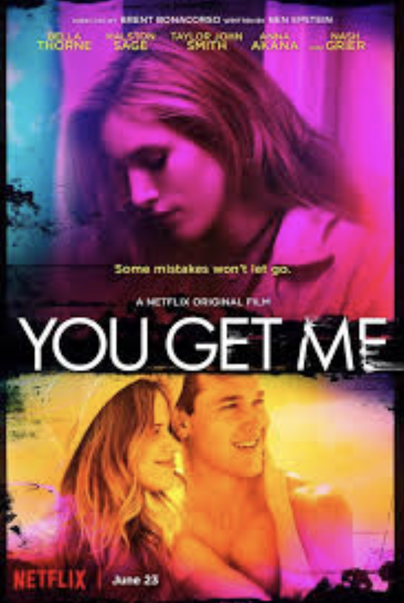
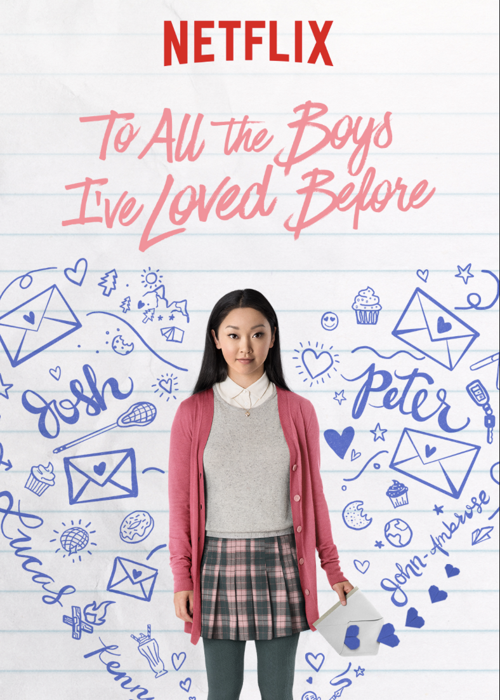

Twee vrouwen die problemen hebben met mannen, ruilen huizen in elkaars land, waar ze elk een lokale gast ontmoeten en verliefd worden.
Belangrijke personages
Cameron Diaz, Jude Law en Kate Winslet
Pretty Little Liars
Regisseur
Lisa Cochran-Neilan
Beschrijving
Vier vrienden verenigen zich tegen een anonieme vijand die dreigt hun duisterste geheimen prijs te geven, terwijl ze ook onderzoek doen naar de verdwijning van hun beste vriendin
Belangrijke personages
Shay Mitchell, Lucy Hale, Ashley Bensen en Troian Bellisario
Divergent
Regisseur
Neil Burger
Beschrijving
In een wereld die wordt gedeeld door facties op basis van deugden, leert Tris dat ze Verschillend is en dat ze er niet in past. Als ze een complot ontdekt om Divergents te vernietigen, moeten Tris en de mysterieuze Vier uitvinden wat Divergents gevaarlijk maakt voordat het te laat is.
Belangrijke personages
Shailene Woodley, Theo James en Ansel Elgort

The 100
Regisseur
Dean White
Beschrijving
Zevenennegentig jaar nadat een nucleaire oorlog de beschaving heeft vernietigd, wanneer een ruimteschip waarin de alleenstaande overlevenden van de mensheid verblijven, honderd jeugdige delinquenten naar de aarde stuurt, in de hoop dat de planeet mogelijk opnieuw wordt bevolkt.
Belangrijke personages
Eliza Taylor, Bob Morley en Marie Avgeropoulus

You get me
Regisseur
Ben Epstein
Beschrijving
Tyler is gek op zijn perfecte vriendin Ali, maar als hij en Ali uiteenvallen door een groot gevecht, belandt hij in de armen van Holly, een buitenstaander die hem een avond laat zien die hij zich zal herinneren. De volgende ochtend komt hij erachter dat Ali hem niet alleen terugwil, maar dat Holly naar hun school is overgebracht en alles zal doen om haar nieuwe man terug te winnen.
Belangrijke personages
Bella Thorne, Halston Sage, Taylor John Smith

To all the boys i've loved before
Regisseur
Suzan Johnson
Beschrijving
De geheime liefdesbrieven van een tienermeisje worden blootgelegd en brengen grote schade toe aan haar liefdesleven.